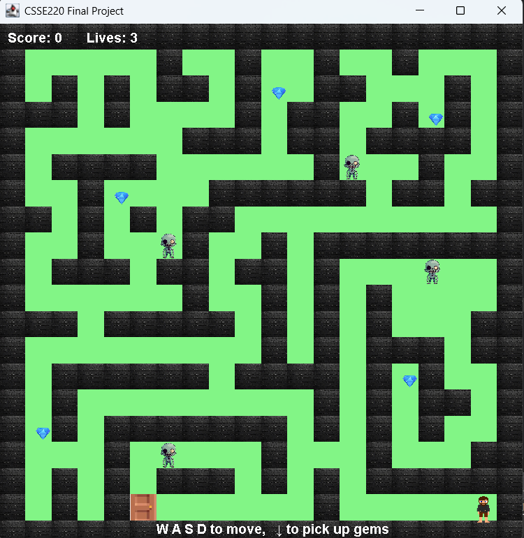

Myth of the Forgotten Bronco

A simple Java terminal-based adventure game inspired by classic text-based games, using player choices and location-based events to progress through the story.
Technologies:
Java, User Input, If Statements, Conditional Logic, Loops, Variables, Methods
Personal Portfolio Website
A personal website showcasing education, work experience,
skills, and software projects.
Technologies:
HTML, CSS, JavaScript, Responsive Web Design, Git, GitHub, GitHub Pages
Maze Zombie Game

A Java maze-based zombie game featuring player movement, enemy encounters, maze navigation, and survival mechanics.
Technologies:
Java, Object-Oriented Programming, Data Structures, Algorithms, Arrays, ArrayLists, Classes, Methods, Conditional Logic, Loops, Git, GitHub